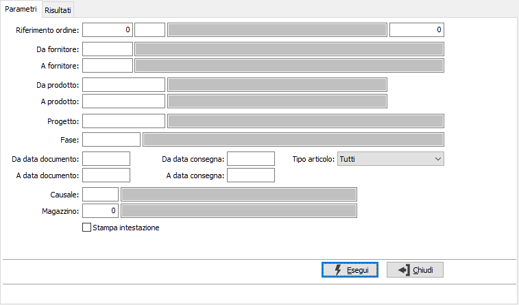
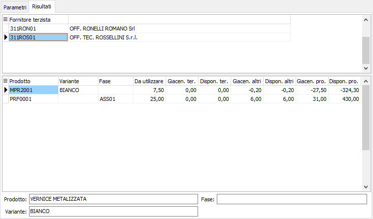

Analisi disponibilità componenti
Il programma effettua la visualizzazione delle disponibilità dei componenti presso i magazzini dei terzisti e presso i propri magazzini in base ai parametri inseriti dall’utente.
E’ possibile analizzare un singolo ordine, gli ordini relativi ad una tipologia omogenea di causali, e/o ad uno o più fornitori, e/o ad uno o più prodotti, e/o relativi ad una singola fase, ad uno specifico magazzino entro limiti di data specificati. Se attiva la gestione progetti è possibile specificare anche il progetto da analizzare.
Il programma si articola su due finestre video. La prima, Parametri, consente la definizione dei parametri di analisi.

RIFERIMENTO ORDINE (ANNO): indica l'anno degli ordini a cui si vuole limitare la selezione.
RIFERIMENTO ORDINE (CAUSALE): eventuale codice della Causale ordini a cui si vuole limitare la selezione. Sul campo sono attive le funzioni di ricerca (F9).
RIFERIMENTO ORDINE (NUMERO): indica il numero dell'ordine a cui si vuole limitare la selezione, in combinazione con anno e/o causale.
DA FORNITORE: eventuale codice del fornitore, presente in anagrafica fornitori, da cui si vuole iniziare la selezione di analisi. Confermando a vuoto, la selezione inizia dal primo fornitore valido. Sul campo sono attive le funzioni di ricerca (F9).
A FORNITORE: eventuale codice del fornitore, presente in anagrafica fornitori, con cui si vuole terminare la selezione di analisi. Confermando a vuoto, la selezione termina con l’ultimo fornitore valido. Sul campo sono attive le funzioni di ricerca (F9).
DA PRODOTTO: eventuale codice dell'articolo, presente in anagrafica Prodotti, da cui si desidera iniziare la selezione di analisi. Confermando a vuoto, la selezione inizia con il primo prodotto valido. Sul campo sono attive le funzioni di ricerca (F9).
A PRODOTTO: eventuale codice dell'articolo, presente in anagrafica Prodotti, a cui si desidera terminare la selezione di analisi. Confermando a vuoto, la selezione termina con l’ultimo valido. Sul campo sono attive le funzioni di ricerca (F9).
PROGETTO: campo attivo solo in caso di gestione progetti attiva; codice del progetto per cui si intende effettuare la selezione di analisi; confermando a vuoto la selezione considera tutti i progetti. Sul campo sono attive le funzioni di ricerca (F9).
FASE: eventuale codice della fase di lavorazione, per cui si desidera effettuare la selezione di analisi. Confermando a vuoto, la selezione considera tutte le fasi di lavorazione. Sul campo sono attive le funzioni di ricerca (F9).
DA DATA DOCUMENTO: eventuale data del documento da cui deve iniziare l’analisi dei documenti relativamente ai precedenti parametri di selezione. Confermando a vuoto, l’analisi inizia con il primo documento valido.
A DATA DOCUMENTO: eventuale data del documento con cui si desidera terminare l’analisi dei documenti relativamente ai precedenti parametri di selezione. Confermando a vuoto, l’analisi si conclude con l'ultimo documento valido.
DA DATA CONSEGNA: eventuale data di consegna da cui deve iniziare l’analisi dei documenti relativamente ai precedenti parametri di selezione. Confermando a vuoto, l’analisi inizia con il primo documento valido.
A DATA CONSEGNA: eventuale data di consegna con cui si desidera terminare l’analisi dei documenti relativamente ai precedenti parametri di selezione. Confermando a vuoto, l’analisi si conclude con l'ultimo documento valido.
TIPO ARTICOLO: combo box per definire il tipo di articolo da trattare. Valori ammessi: Tutti, Nessuno ,Materia prima, Semilavorato, Prodotto finito, Prodotto transitorio, In lavorazione, Prestazione/servizio, Manodopera, Lavorazione, Costi vari.
CAUSALE: eventuale codice della causale a cui si vuole restringere la selezione di analisi. Sul campo è attiva la vista F9 sulla tabella Causali ordini terzisti.
MAGAZZINO: eventuale codice del magazzino a cui si vuole restringere la selezione di analisi. Sul campo è attiva la vista F9 sulla tabella Magazzini.
STAMPA INTESTAZIONE: Indica se stampare una pagina con i criteri di selezione della stampa, l’operatore che l’ ha eseguita, la data e l’ora (casella con segno di spunta).
Confermando tramite pressione del bottone Esegui, viene avviata la selezione e richiamata la finestra video Risultati.
Cliccando sui bottoni anteprima di stampa o stampa della tool bar, si avviano le relative funzioni.

La finestra video è articolata su due sezioni: la sezione superiore elenca i fornitori selezionati.
La sezione inferiore elenca invece i componenti, degli ordini selezionati in base ai criteri, relativi al rigo di testa (fornitore) selezionato, che è quello contrassegnato dalla freccia, a sinistra del rigo nella sezione superiore. Vengono evidenziati per ogni componente la quantità da inviare la giacenza e la disponibilità relativa al fornitore, la giacenza e la disponibilità relativa ad altri fornitori e la giacenza e la disponibilità propria.